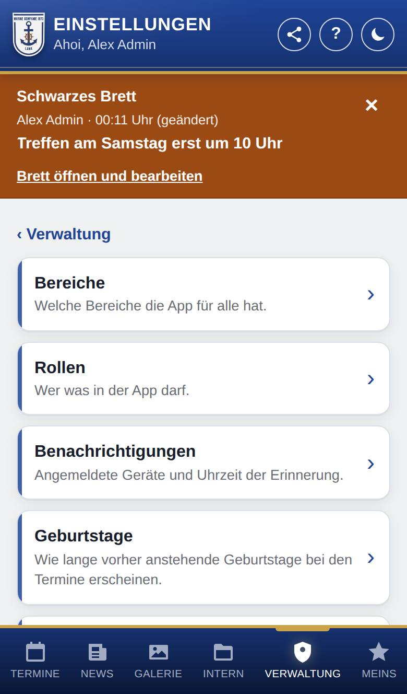

Einstellungen
Hier stellst du die App für eure Kompanie ein: welche Bereiche es gibt, wer was darf, die Verbindungen zu Google und den Zustand der App. Die Seite sehen nur Admins.

So öffnest du die Seite
Tippe unten auf Verwaltung und dann auf Einstellungen.
Was du hier siehst
Je Thema eine Zeile mit einem kurzen Satz. Tippe auf eine Zeile, um ihre Seite zu öffnen. Mit ‹ Einstellungen oben kommst du von dort zurück zur Übersicht.
- Bereiche: welche Bereiche die App für alle hat. Siehe Bereiche.
- Rollen: wer was in der App darf. Siehe Rollen.
- Benachrichtigungen: angemeldete Geräte und Uhrzeit der Erinnerung. Siehe Benachrichtigungen einstellen.
- Geburtstage: wie lange vorher anstehende Geburtstage bei den Termine erscheinen (nur, wenn Geburtstage an ist).
- E-Mail: Kompanieadresse und Mailserver, z. B. für Nachrichten aus dem Bereich Schwarzes Brett. Siehe E-Mail einrichten.
- Google-Zugang: die Verbindung zu Google für Galerie und Kalender. Siehe Google-Zugang.
- Galerie: der Ordner in Google Drive mit den Fotoalben. Siehe Galerie einrichten.
- Kalender: woher der Kalender für Mitglieder kommt. Siehe Kalender einrichten.
- Neuigkeiten: woher die News kommen. Heißt der Bereich bei euch anders als „News“, steht hier sein Name. Die Seite gibt es nur in der eigenständigen App (ohne WordPress).
- Nutzung: wer die App wann nutzt und welche Bereiche. Siehe Nutzung.
- Zustand und Updates: Ampel je Bereich, installierte Version, Updates und Fehlerprotokoll. Siehe Zustand und Updates.
- Datensicherung: Sicherung herunterladen oder einspielen. Siehe Datensicherung.
- Wartungsmodus: die App vorübergehend nur für Admins öffnen. Siehe Wartungsmodus.
- Was ist neu: Änderungen von Version zu Version. Siehe Was ist neu.
Gut zu wissen
- Mit WordPress kommen die News immer aus den Beiträgen der Webseite; deshalb fehlt dort die Zeile Neuigkeiten. Einige Einstellungen findest du mit WordPress zusätzlich im WordPress-Backend auf der Seite der App.
- Klappt etwas nicht, hilft oft Häufige Probleme.